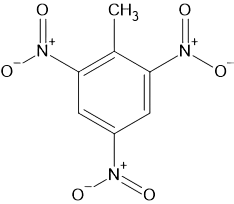

Witaj w temacie NITRY
Czym są węglowodory NITRY?
W ogóle zacznijmy od tego czemu pisze to capslockiem? Jest to mój ulubiony temat od 10 minut. Więc co to jest? Są to substancje z grupą nitrową(-NO2)
Co w tym takiego fajnego?
Te substancje mają silny charakter wybuchowy🤤🤤🤤
Jak pozyskać?
Wykorzystuje się do tego tzw. mieszaninę nitrującą.
Co to mieszanina nitrująca?
Jest to H2SO4 razem z HNO3. W obecności tego roztworu substancje zabierają z kwasu azotowego(V) grupę nitrową co w efekcie ubocznym daje wodę.
Reakcja nitrowania:
CH4 + HNO3 + H2SO4 → CH3NO2
Przykłady nitrów:
Znacie nitroglicerynę🤤 ale czemu? Jest to dlatego że grupa nitrowa łączy się z łańcuchem głównym po przez tlen a nie azot co czyni ją odrazu azotanem.
Jest jeszcze coś takiego jak 2,4,6-trinitrotoulen jest to pochodna toulenu która wygląda tak:
Wygląda znajomo? Wiem przecież że nie🙄. Jest to substancja znana pod pseudonimem TNT albo trotyl🤤
-
Jakie ma plusy?
- Wybucha🤤 Jakie ma minusy?
- Jak wybucha to nie ma minusów
A tak serio ciekawą substancją z grupą nitrową jest nitrometan, która jest magiczna bo sprawia że ogień jest biały...
W sumie tylko tyle mam do powiedzenia ale uwieżcie że będzie jeszcze więcej! Na dole macie kolejny temat. Mam nadzieje że grupa nitrowa was tak samo fascynuje jak mnie! Pozdrawiam!